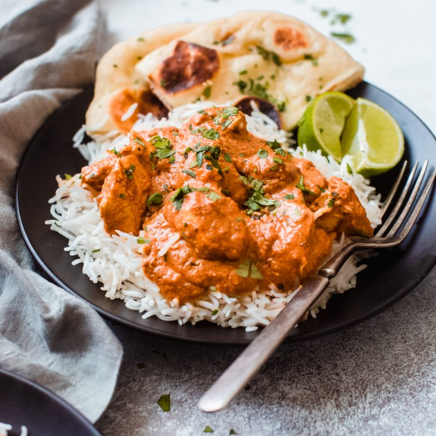

Chicken Tikka Masala

Description
Chicken tikka masala is a dish consisting of roasted
marinated chicken chunks in spiced curry sauce. The curry
is usually creamy and orange-coloured. The dish was
popularized by cooks from India, Pakistan and Bangladesh
living in Britain and is offered at restaurants around
the world.
Ingredients
- 6 garlic cloves, finely grated
- 4 tsp. finely grated peeled ginger
- 4 tsp. ground tumeric
- 2 tsp. garam masala
- 2 tsp. ground coriander
- 2 tsp. ground cumin
- 1 1/2 cups whole milk yogurt (not Greek)
- 1 Tbsp. kosher salt
- 2 lb. skinless, boneless chicken breasts
- 3 Tbsp. ghee (clarified butter) or vegetable oil
- 1 small onion, thinly sliced
- 1/4 cup tomato paste
- 6 cardamom pods, crushed
- 2 dried chiles de arbol or 1/2 tsp. crush red pepper
flakes
- 1 28-oz. can whole peeled tomatoes
- 2 cups heavy cream
- 3/4 cup chopped cilantro
- Steamed basmati rice (for serving)
Steps
- Combine garlic, ginger, turmeric, garam masala, coriander,
and cumin in a small bowl. Whisk yogurt, salt, and half
of spice mixture in a medium bowl; add chicken and turn
to coat. Cover and chill 4-6 hours. Cover and chill remaining
spice mixture.
- Heat ghee in a large heavy pot over medium heat. Add onion,
tomato paste, cardamom, and chiles and cook, stirring often,
until tomato paste has darkened and onion is soft, about
5 minutes. Add remaining half of spice mixture and cook,
stirring often, until bottom of pot begins to brown, about
4 minutes.
- Add tomatoes with juices, crushing them with your hands
as you add them. Bring to a boil, reduce heat, and simmer,
stirring often and scraping up browned bits from bottom
of pot, until sauce thickens, 8-10 minutes.
- Add cream and chopped cilantro. Simmer, stirring occasionally,
until sauce thickens, 30-40 minutes.
- Meanwhile, preheat broiler. Line a rimmed baking sheet
with foil and set a wire rack inside sheet. Arrange
chicken on rack in a single layer. Broil until chicken
starts to blacken in spots (it will not be cooked through),
about 10 minutes.
- Cut chicken into bite-size pieces, add to sauce, and
simmer, stirring occasionally, until chicken is cooked
through, 8-10 minutes. Serve with rice and cilantro
sprigs.